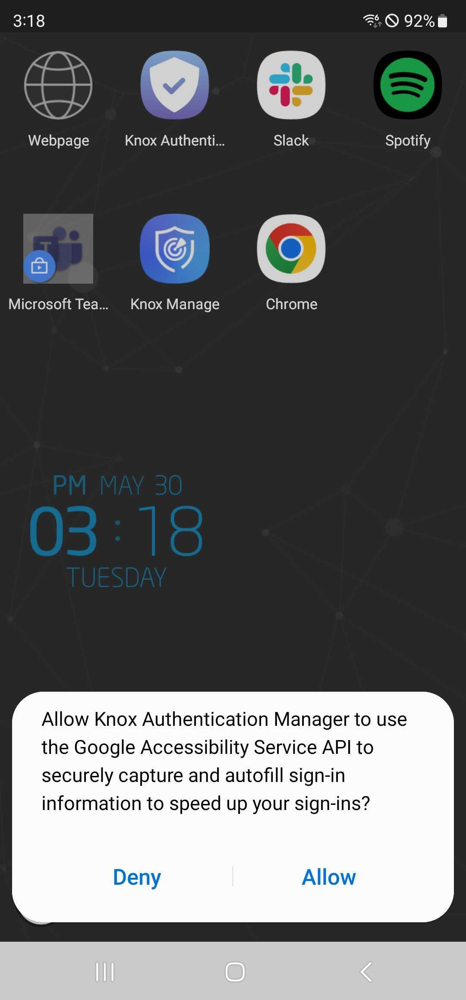
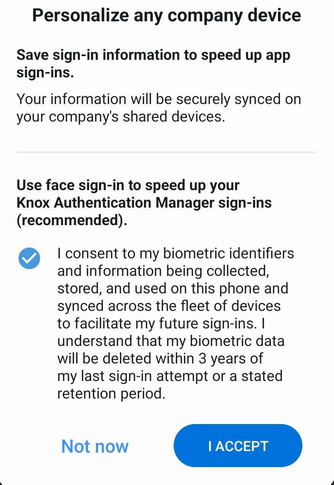
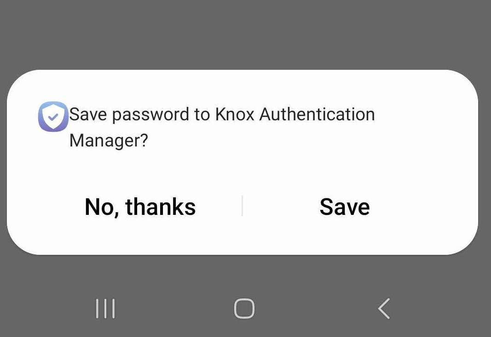
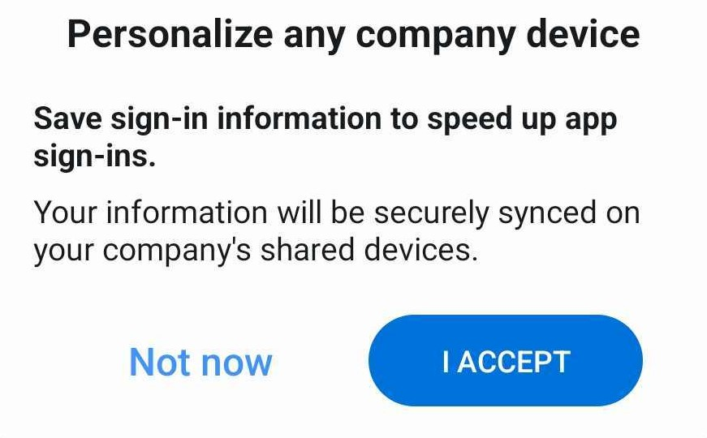
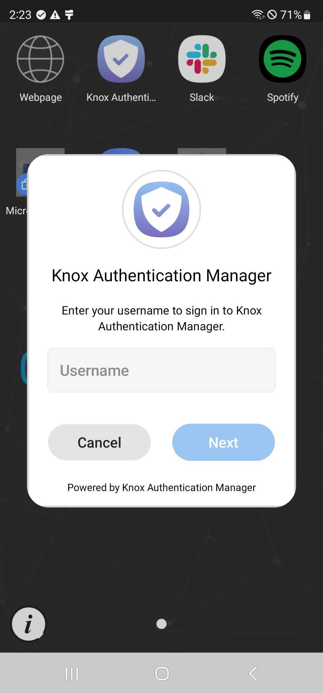
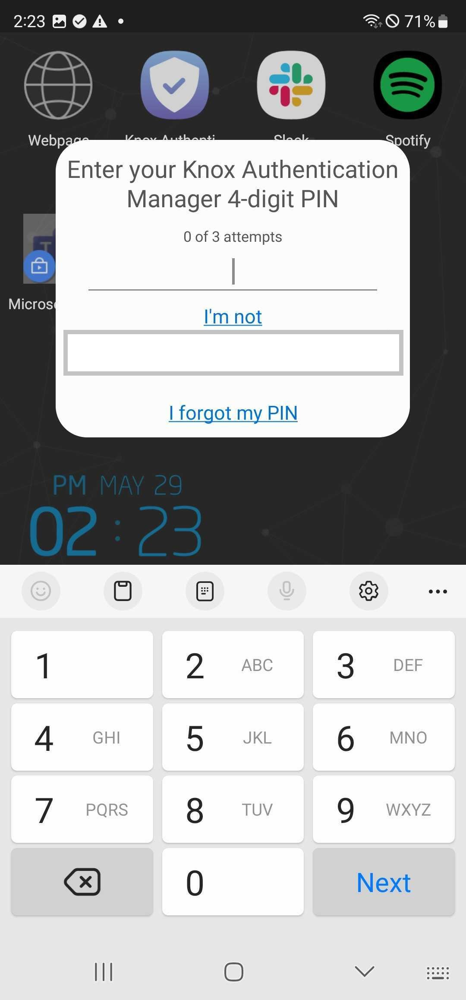
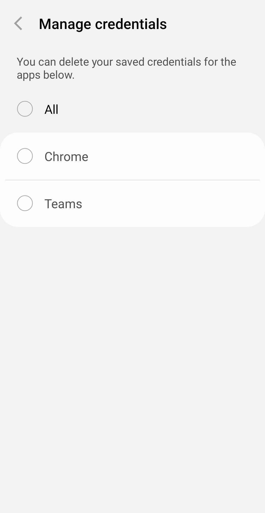

Get started as a user
Last updated July 26th, 2023
The following tutorial is intended for end users and guides you through the basics of setting up a Knox Authentication Manager account.
Step 1: Register a user account and start using Knox Authentication Manager
Learn how to register your account with Knox Authentication Manager and save your sign-in credentials for apps.
Register a user account with face sign-in
To register your account when face sign-in is enabled and configured:
-
Unlock your device. Knox Authentication Manager automatically launches on devices managed by VMware Workspace ONE. Knox Authentication Manager doesn’t automatically launch on devices managed by Knox Manage or SOTI unless your IT admin configured it to.
Note
If this is the first time Knox Authentication Manager is used on a device, two notifications will pop up on the device which ask you to allow Knox Authentication Manager to send notifications and get camera access. If you don’t allow Knox Authentication Manager camera access while using the app, you and other users won’t be able to use face sign-in on the device.
-
Enter your enterprise username on the Knox Authentication Manager dialog and then click Next. On the next screen, sign in using your enterprise credentials. For VMware, your enterprise credentials are the credentials you use to sign in to VMware. For SOTI and Knox Manage, your enterprise credentials are your Azure AD credentials. Then click Next. The device switches back to Knox Authentication Manager once you sign in.
-
On the pop up, tap Allow if you agree to let Knox Authentication Manager use the Google Accessibility Service.

-
On the Samsung Knox Authentication Manager pop up, if you agree to let the app capture and store your biometric data, select the round checkbox and tap I Accept.

-
Next, proceed through the prompts to register your PIN and face sign-in credentials.
-
Once your account is registered, whenever you sign in to an app for the first time, Knox Authentication Manager will offer to save your credentials for next time. When Knox Authentication Manager prompts you to save the sign-in information for the app, tap Save to save the app’s credentials.

Register a user account with manual sign-in
To register a user account when face sign-in is disabled:
-
Unlock your device or launch Knox Authentication Manager. Enter your enterprise username on the Knox Authentication Manager dialog. Then click Next.
-
On the next screen, sign in using your enterprise credentials. Then click Next. The device switches back to Knox Authentication Manager once you sign in.
-
On the pop up, tap Allow if you to agree to let Knox Authentication Manager use the Google Accessibility Service.
-
On the Samsung Knox Authentication Manager pop up, tap I Accept if you agree to let Knox Authentication Manager save your app credentials.

-
Once your account is registered, whenever you sign in to an app for the first time, Knox Authentication Manager will offer to save your credentials for next time. When Knox Authentication Manager prompts you to save the sign in information for the app, tap Save.
Step 2: Sign in and out of Knox Authentication Manager
This section describes how to sign in and out of Knox Authentication Manager. Each time you pick up a shared device at the start of your shift, you need to sign in to Knox Authentication Manager to access your profile and settings.
Sign-in with your PIN and face
To sign in to Knox Authentication Manager with your PIN and face:
-
Unlock your device or launch Knox Authentication Manager. Enter your enterprise credentials and click Next.

-
Enter your PIN and scan your face to authenticate.

-
When you open any app for which you have saved sign-in information for, Knox Authentication Manager automatically signs in to it.
Sign-in manually
To sign in to Knox Authentication Manager using your UEM or Azure AD credentials:
- Unlock your device or launch Knox Authentication Manager. Enter your enterprise ID and click Next.
- Knox Authentication Manager auto-fills the username in the shared device launcher or Azure AD sign-in dialog, after which you must enter your password.
- When you open any app for which you have saved sign-in information for, Knox Authentication Manager automatically signs in to it.
Sign out
To sign out of Knox Authentication Manager and manually end the shared-device session:
- For VMware: Close the UEM launcher.
- For SOTI and Knox Manage: Open the Knox Authentication Manager app and tap Sign out on the home screen or pull down the notification drawer on your device and click Tap here on the Knox Authentication Manager notification to sign out.
Step 3: Manage app credentials
Learn how to manage your app credentials in Knox Authentication Manager.
To ensure that Knox Authentication Manager captured your sign-in credentials for any apps that you signed in to:
-
Open the app, go to the menu, and tap Manage credentials. Check that all the apps for which you saved your sign-in information are listed.

To delete your saved sign-in credentials:
- Open the app and navigate to Manage credentials. Select one or more apps, then tap Delete.
- Sign-out of Knox Authentication Manager. Then sign back in and open the app or apps for which you deleted your sign-in information to ensure that Knox Authentication Manager doesn’t autofill your sign-in credentials.
Note
When Knox Authentication Manager saves your credentials for productivity apps, it associates them with a package name or an auth URL. If multiple apps share the same auth URL, there may be a single entry for those apps under Manage credentials. If productivity apps share the same auth URL with the main login identity server, there is no entry, and the productivity app logins will be automated since the credentials were already saved during registration.
Is this page helpful?